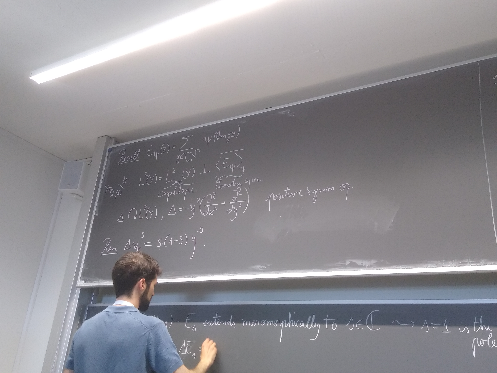

Radu Toma · Lectures 3–4
Notes from Radu Toma’s minicourse at RGNT in Lausanne, 25 June 2026. See the programme and lectures 1 and 2 on 24 June 2026.
We recall from the picture

(Eisenstein series)
\[\begin{equation} E_{s}(z) = \sum_{\gamma \in \Gamma_{\infty} \backslash \Gamma} \Im(\gamma z)^{s} \end{equation}\]
\(E_{s}\) converges when \(\Re(s) > 1\). Here \(\Delta E_{s} = s(1-s) E_{s}\).
\(E_{s} \notin L^{2}\). Not so bad to recall on \(L^{2}(\mathbb{R})\).
(Hard theorem of Selberg)
\(E_{s}\) extends meromorphically to \(s \in \mathbb{C}\) except at \(s=1\) (the only pole).
We have - \[\begin{equation} \Delta E_{s} = s(1-s) E_{s} \end{equation}\] - The constant term \[\begin{equation} (E_{s})_{N} (y) = y^{s} + c(s) y^{1-s}, \end{equation}\] where \(c(s) = \frac{\xi(2(1-s))}{\xi(2s)}\) for \(\xi(s) = \pi^{-s/2} \Gamma(s/2) \zeta(s)\). - \(E_{s} = c(s) E_{1-s}\) - \(E_{s}\) is holomorphic for \(\Re(s)=1/2\).
For the probability measure on \(Y\), one has \[\begin{equation} E_{\psi} = \langle \psi ,1 \rangle + \frac{1}{4\pi} \int_{-\infty}^{\infty} \langle E_{\psi}, E_{\frac{1}{2}+it}\rangle E_{\frac{1}{2}+it} \,\mathrm{d}t \end{equation}\]
\(\Delta\) on \(L^{2}_{\mathrm{cusp}}\) has a pure point spectrum. \(\exists (u_{j}) \in L^{2}_{\mathrm{cusp}}\) such that \(\forall f \in L^{2}_{\mathrm{cusp}}(Y)\). Additionally, eigenvalues of \(u_{j} \xrightarrow[]{} \infty\) (non-trivial).
For all \(f \in L^{2}(Y)\), \(f = \sum \langle f, u_{j}\rangle u_{j} + \frac{1}{4 \pi} \int_{\Re(s) = 1/2}^{} \langle f , E_{s}\rangle E_{s} \,\mathrm{d}s\) , where \(u_{0} \equiv 1\), \(u_{1},u_{2}, \cdots\) are cuspidal.
## Recollections on Hecke operators
Denote \[T_{n}f(\underbrace{L}_{\text{ lattice } \in Y}) = \frac{1}{d(n)} \sum_{[L:M]=n}^{} f(\tfrac{1}{\sqrt{n} M }),\] where \[\begin{equation} d(n) = \sum_{d \mid n} d \end{equation}\]
Some properties: - \(T_{n} \curvearrowright L^{2}(Y) : T_{n}^{*} = T_{n}\) if \(\langle T_{n} f , g \rangle = \langle f , T_{n} g\rangle\). (This is only a special property in \(\mathrm{SL}_{2}(\mathbb{R})/\mathrm{SL}_{2}(\mathbb{Z})\).) - \(T_{n} T_{m} = T_{m} T_{n}\) for all \(m,n\). - \(T_{n}\) commutes with \(\Delta\) and preserves \(L^{2}_{\mathrm{cusp}}\). - On \(L^{2}(Y)\), we can simultaneously diagonalize in the following sense. There is a basis \((u_{j})\) among which \(u_{0} \equiv 1\), of eigenfunctions of \(\Delta\) and \(T_{n}\) for all n. These are called Hecke–Maass forms. Ideally, we would like to show that all these eigenfunctions are with multiplicity one (so all eigenforms are Hecke–Maass forms), but this is not known.
Fact: \[\begin{equation} T_{n} E_{\tfrac{1}{2} + it} = \left( \tfrac{1}{\sqrt{n}} \sum_{ad = n}^{} (\frac{a}{d})^{it}\right) E_{\tfrac{1}{2} + it} \end{equation}\]
Weyl’s criterion: It suffices to prove this for \(f\) in a basis. That is, for \(f\) a Hecke–Maass cusp form and for Eisenstein series
We recall \[\begin{equation} T_{n} E_{s} = \tfrac{1}{\sqrt{n}} \sum_{ad=n}(\tfrac{a}{d})^{it}E_{s},\text{ for } s = 1/2 + it. \end{equation}\]
\[\begin{equation} |\tfrac{1}{\sqrt{n}} \sum_{ad =n}^{} (\frac{a}{d})^{it}| \leq \tfrac{1}{\sqrt{n}} \#\{\text{ divisors }\} \leq c_{\varepsilon} n^{-\frac{1}{2} + \varepsilon} \rightarrow 0 \end{equation}\]
Recall \(u ( z+1) = u(z)\). Hence Fourier expansion \(u(x+iy) = \sum_{n \in \mathbb{Z}}^{} a(n,y) e(nx)\). One can write \[\begin{equation} \Delta u = \lambda u = s(1-s) u \end{equation}\] Cuspidal implies that \(a(0,y)=0\). This implies that \(u(x+iy) = \sum_{n \in \mathbb{Z} \setminus \{0\}}^{} a(n) \sqrt{y} K_{s-\tfrac{1}{2}}(2 \pi |n| y) e(nx)\). Here \(K_{s-\tfrac{1}{2}}\) is the Bessel function (of some kind).
After some renormalizing the Hecke operators, we get \[\begin{equation} T_{n}^{\sharp} f(L) = \tfrac{1}{\sqrt{n}} \sum_{\text{ sublattices }}^{} f(M). \end{equation}\] Using this \[\begin{equation} T_{n}^{\sharp} u = \lambda_{n}^{\sharp} u \implies a(n) = \lambda(n)^{\sharp} a(1). \end{equation}\] Unfortunately, this step is non-trivial but you really need to write it down (???). Using this, we get the “trivial” bound: \(a(n) \ll \sqrt{n} \leftrightarrow \lambda(n) \ll 1\). (Radu doesn’t have time!)
Automorphic forms are good at forming L-functions
We will take the L-function route.
Normalize \(u\) such that \(a(1) = 1 \implies a(n)\) is multiplicative and \(a(nm) = a(n)a(m)\) for all \(\gcd(n,m)=1\). Define \[\begin{equation} L(s,u) = \sum_{n=1}^{\infty} \frac{a(n)}{n^{s}}. \end{equation}\] This has
Euler product from Hecke operators \[\begin{align} L(s,u) & = \prod_{p}^{} \sum_{}^{} a(p^{r}) (p^{r})^{-s} \\ & = \prod_{p}^{} (1- a(p)p^{-s} + p^{-2s})^{-1} \end{align}\] Recall \[\begin{equation} \zeta(s) = \prod_{p}^{} (1-p^{-s})^{-1} \end{equation}\]
Fact:
\[\begin{equation} \int_{0}^{\infty} u(iy) y^{s \pm \tfrac{1}{2}} y^{-1}\,\mathrm{d}y = \pi^{-s} \Gamma(\frac{s+ \varepsilon + \nu}{2}) \Gamma(\frac{s+\varepsilon - \nu}{2}), \end{equation}\] where \(\varepsilon= 0\) or \(1\) depending on \(u\) is even or odd. More precisely \(u(-x+iy) = (-1)^{\varepsilon} u(x+iy)\). The variable \(\nu\) is \(\Delta u = (\tfrac{1}{4} - \nu^{2})u\).
Riemann’s trick and the transform \(z \mapsto -1/z\) show that \(\Lambda(s,u)\) is holomorphic on \(s \in \mathbb{C}\) and \(\Delta(u,s) = (-1)^{\varepsilon} \Lambda(1-s,u)\).
Let \[\begin{align} \varphi = & \sum_{}^{} a(n) \sqrt{y} K_{\nu} ( 2 \pi |n| y) e(n x) \\ \psi = & \sum b(n) (\cdots) \end{align}\]
Hecke–Maass cusp forms
\[\begin{equation} L(s, \phi \times \psi ) = \zeta(2s) \sum_{}^{} \frac{a(n) b(n)}{n^{s}}. \end{equation}\]
The method of Rankin-Selberg is \(\Re(s) > 1\): \[\begin{equation} \int_{Y}^{} E(z,s) \varphi(z) \psi(z) \,\mathrm{d}z = (\text{ some local factors }) \sum_{}^{} \frac{a(n) b(n)}{n^{s}} \end{equation}\]
Recall if \[\begin{equation} c(s) E_{s} = E_{1-s} \end{equation}\] and analytic continuation of \(E_{s}\) implies \[\begin{equation} \Lambda(s, \varphi \times \psi) = (\cdots ) L(s,\varphi \times \psi) \end{equation}\] has a meromorphic continuation to \(\mathbb{C}\) with poles at most at \(s=0\) and \(s=1\) and \(\Lambda(s) = \Lambda(1-s)\).
Langlands’ philosophy tells us that this Rankin-Selberg should be the \(L\)-function from some automorphic form. This is indeed true for some \(\mathrm{GL}(4)\) automorphic form!
(Landau’s theorem)
Let - \(L(s) = \sum_{}^{} b_{n} n ^{-s}\), \(b_{n} \geq 0\), convergent in \(\Re(s) > 1\), - \(L(s)\) meromorphically continues with a pole at \(s=1\) on \(\Re(s) \geq \tfrac{1}{2}\) - Size bounds on \(L\) - Functional equation with \(\Gamma\) factors
Then \(\sum_{n \leq x}^{} b_{n} = C \cdot x + O_{\varepsilon, L} (x^{\frac{2 \eta - 1}{ 2 \eta + 1} + \varepsilon})\) where \(\eta = \sum \alpha_{i}\).
We’ll apply to \(L(s,\varphi \times \overline{\varphi})\). This gets \(\Gamma\) factors \[\begin{equation} \Gamma(\frac{s}{2})^{2} \Gamma( \frac{s+ 2 \nu}{2}) \Gamma( \frac{s-2 \nu}{2}) \implies \eta = 2 \end{equation}\] Write \[\begin{equation} L(s, \varphi \times\overline{\varphi}) = \sum_{}^{} \frac{b_{n}}{n^{s}} \end{equation}\] where \[\begin{equation} b_{n} = \sum_{\substack{u v = n \\ u = \text{ square }}}^{} a(v)^{2} \geq 0 \end{equation}\] Landau implies that \[\begin{equation} \sum_{n \leq x}^{} b_{n} = C x + O(x^{\frac{3}{5} + \varepsilon}) \end{equation}\] Möbius inversion gives \[\begin{equation} \sum_{n \leq x}^{} |a(n)|^{2} = \sum_{n \leq x} \sum_{u v = n}^{} u_{\mathrm{sq}}(u) b_{v}, \end{equation}\] where \[\begin{equation} u_{\mathrm{sq}}(n) = \begin{cases} \mu(d) & \text{if } n=d^{2}, \\ 0 & \text{otherwise}. \end{cases} \end{equation}\] We can write this as \[\begin{align} & = \sum_{u \leq x} u_{\mathrm{sq}}(u) \sum_{v \leq x u^{-1}}^{} b_{v} \\ & = C \sum_{}^{} u_{\mathrm{sq}} \frac{x}{u} + O(x^{\frac{3}{5}} \sum_{u \leq x}^{} u u^{\frac{-\frac{3}{5} + \varepsilon}{}}) \end{align}\]
We will use the simple fact \[\begin{equation} \frac{1}{\zeta(2s)} = \sum_{n \geq 1}^{\infty} \frac{u_{\mathrm{sq}}(n)}{n^{s}} \end{equation}\] This implies \[\begin{equation} \sum_{n \leq x}^{} |a(n)|^{2}= \frac{C}{\zeta(2)} x + O(x^{3/5} + \varepsilon) \end{equation}\] Use this with \(x=N\) and \(x=N-1 \implies |a(N)|^{2} = \sum_{n \leq N} |a(n)|^{2} - \sum_{n \leq N-1} |a(n)|^{2} \ll N^{3/5+\varepsilon}\) . This implies \[\begin{equation} a(N) \ll N^{3/10 + \varepsilon} \text{ and } \frac{3}{10} < \frac{1}{2} \end{equation}\]
Best reference for this is Bergeron. The book is called The spectrum of hyperbolic surfaces.
This page was updated on November 19, 2026.
Main Page